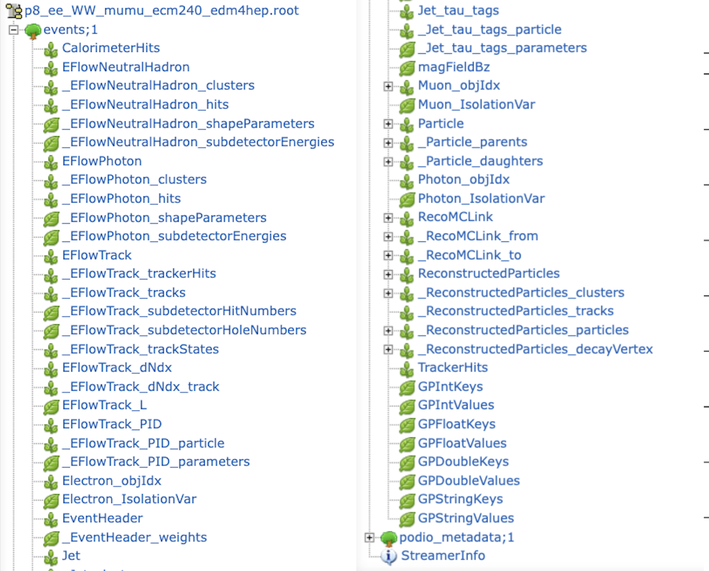

3.3. Some Useful Info on EDM4hep, Analyzers, and More#
Needs Updating …
This section is currently under construction to reflect the updates made to EDM4hep in the more recent past.
Page contributors
Clement Helsens, Juraj Smiesko
This directory contains a number of examples each showcasing a specific functionality of the FCCAnalyses framework. It serves as a reference guide for how to implement specific common usecases or you can work through the examples one-by-one in order as a tutorial to familiarize yourself with the full functionality of the framework.
Each example is a stand-alone script for demonstration purposes, and does not make assumptions on a specific physics case. To understand how to write a full analysis with the FCCAnalyses framework please have a look at (insert a link to documentation about code class-structure) - the examples here only illustrate specific technical functionalities.
By calling python <example>.py you can run the specific example over the integrated test file found (add the testdata directory), and it will create a new directory in your current working directory with the name of the example to write the output to. If you prefer to run over your own input file or a different output directory you can run with options:
python <example>.py -i <path_to_your_inputfile> -o <path_to_your_outputdir>
Certain examples may have additional options, you can always check what options
are available with python <example>.py -h.
3.3.1. EDM4hep in FCCAnalyses#
The FCCAnalyses framework is based on the RDataFrame interface which allows fast and efficient analysis of ROOT’s TTrees and on samples following the EDM4HEP event data model. Some brief explanations and links to further material on the two are given below — a basic understanding of both is necessary for using this framework to write your own analysis code.
3.3.1.1. EDM4hep event model#

EDM4hep event data model overview.#
The EDM4hep data model attempts to describe event data with the set of standard datatypes. It is described in a single YAML file and generated with the help of Podio. For example the datatype for the calorimeter hit has following members:
edm4hep::CalorimeterHit:
Description: "Calorimeter hit"
Author: "EDM4hep authors"
Members:
- uint64_t cellID // detector specific (geometrical) cell id
- float energy [GeV] // energy of the hit
- float energyError [GeV] // error of the hit energy
- float time [ns] // time of the hit
- edm4hep::Vector3f position [mm] // position of the hit in world coordinates
- int32_t type // type of hit
3.3.1.2. Structure of EDM4hep Files#
The content of an EDM4hep file can be seen by opening it in ROOT, and by inspecting the content of the events tree with a TBrowser.
For example,
root -l https://fccsw.web.cern.ch/tutorials/ana-sim-evt/p8_ee_WW_mumu_ecm240/p8_ee_WW_mumu_ecm240_edm4hep.root
root[0] TBrowser b

Example edm4hep.root file opened in ROOT TBrowser.#
As shown in the screenshot above, there are several types of branches in an EDM4hep ROOT file:
Main object collections, such as:
Particle, ReconstructedParticles, CalorimeterHits, ...
These correspond to the main EDM4hep collections containing the physics objects and their data members (momentum, charge, mass, vertex position, etc.).
For example, theParticlebranch stores the full collection of Monte Carlo particles data typeedm4hep::MCParticleData. TheReconstructedParticlesbranch stores reconstructed particles as data typeedm4hep::ReconstructedParticleData.PODIO auxiliary branches, prefixed with a single underscore
_such as:
_Particle_parents, _Particle_daughters, _EFlowTrack_trackStates, ...
These are internal storage branches automatically generated by PODIO for variable-length members and relations between EDM4hep objects.Relation/index collections, such as:
Muon_objIdx, Electron_objIdx, ...
These collections store indices pointing to objects in another collection.
For example,Muon_objIdx.indexcontains indices into the globalReconstructedParticlescollection.
FCCAnalyses makes use of these indices to retrieve the corresponding reconstructed particles. For example to retrieve a list of muons:
df = df.Alias("Muon0", "Muon_objIdx.index")
df = df.Define(
"muons_all",
"FCCAnalyses::ReconstructedParticle::get(Muon0, ReconstructedParticles)")
3.3.2. Overall organisation of analysis code (C++)#
All the common code lives in FCCAnalyses namespace which is by default loaded
when running fccanalysis command. Then each module of analyzers in one header
file has its own dedicated namespace, thus to call a given function from a given
module it should look like FCCAnalyses::<ModuleName>::<FunctionName> but
<ModuleName>::<FunctionName> should also work. For example, to call get_px
from the ReconstructedParticle module write:
ReconstructedParticle::get_px(<BranchName>).
3.3.3. Reading objects from EDM4hep#
The example
read_EDM4HEP.py shows you how to access the different objects such as jets, electrons, muons,
missing \(E_T\) etc. from the EDM4hep files. Generally a new variable is
calculated with a statement inside the analysers(df) function of the
RDFanalysis class like
dataframe.Define("<your_variable>", "<accessor_fct (<name_object>)>")
which creates a column in the RDataFrame named <your_variable> filled with the
return value of the <accessor_fct> for the given object.
Here, accessor functions are the functions found in the C++ analyzers code that
return a certain variable. Since the analyzers code defines a specific namespace
for each module, such as ReconstructedParticle or MCParticle, the full accessor
function call looks like <namespace>::<function_name>(object). To access the
\(p_T\) of a reconstructed object you would therefore call
ReconstructedParticle::get_pt(object) and for a MC-particle the call would be
MCParticle::get_pt(object). The namespace corresponds to the file name of the
C++ code, making it clear where to look for the source code if you have a
question about the internal workings of one such functions.
Below you can find an overview of the basic, most commonly required functions, to illustrate the naming conventions. This is not an exhaustive list, if you want to find out all functions that are available please take a look in the respective analyzers code itself — here for reconstructed particles and here for MC particles.
Variable |
Function name |
Available for |
|---|---|---|
Transverse momentum |
|
|
Pseudorapidity |
|
|
Energy |
|
|
Mass |
|
|
Charge |
|
|
Number (in event) |
|
|
PDG ID |
|
|
If you want to add your own function have a look at the Writing a new analyzer section on this page.
For the name of the object, in principle the names of the EDM4hep collections are used — photons, muons and electrons are an exception where a few extra steps are required, as shown in the example here.
This example also shows how to apply object selection cuts, for example
selecting only reconstructed objects with a transverse momentum \(p_T\) larger
than a given threshold by using the
ReconstructedParticle::sel_pt(<threshold>)(<name_object>) function.
In the end of the example you can see how the selected variables are written to
branches of the output n-tuple, using the
dataframe.Snapshot("<tree_name>", <branch_list> ), where in all examples here
the name of the output-tree is always events and the branch_list is defined as
a ROOT.vector('string') as demonstrated in the example. Note that branches of
variables that exist multiple times per event, i.e. anything derived from a
collection such as the \(p_T\) of jets, result in vector branches. This is also
true for some quantities that in principle only exist once per event, but are
collections in the EDM4hep format, such as the missing transverse energy.
3.3.4. Association between RecoParticles and MonteCarloParticles#
By design, the association between the reconstructed particles and the
Monte-Carlo particles proceeds via the MCRecoAssociations collection, and its
two associated collections of references, MCRecoAssociations#0 and
MCRecoAssociations#1, all of the same size. The collectionID of
MCRecoAssociations#0 is equal to 7 in the example file used here (see above,
Structure of EDM4hep Files), which means that MCRecoAssociations#0 points
to the ReconstructedParticles. While the collectionID of
MCRecoAssociations#1 is equal to 5, i.e. MCRecoAssociations#1 points to the
Particle collection (i.e. the Monte-Carlo particles).
Their usage is best understood by looking into the code of ReconstructedParticle2MC::getRP2MC_index reported below:
ROOT::VecOps::RVec<int>
ReconstructedParticle2MC::getRP2MC_index(const ROOT::VecOps::RVec<int>& recind,
const ROOT::VecOps::RVec<int>& mcind,
const ROOT::VecOps::RVec<edm4hep::ReconstructedParticleData>& reco) {
ROOT::VecOps::RVec<int> result;
result.resize(reco.size(),-1.);
for (size_t i=0; i<recind.size();i++) {
result[recind.at(i)]=mcind.at(i); // recind.at(i) is the index of a reco'ed particle in the ReconstructedParticles collection
// mcind.at(i) is the index of its associated MC particle, in the Particle collection
}
return result;
}
which, in a FCCAnalyses configuration file, will be called via :
.Alias("MCRecoAssociations0", "MCRecoAssociations#0.index")
.Alias("MCRecoAssociations1", "MCRecoAssociations#1.index")
.Define('RP_MC_index',"ReconstructedParticle2MC::getRP2MC_index(MCRecoAssociations0, MCRecoAssociations1, ReconstructedParticles)")
(the first two Alias lines are needed for ROOT to understand the pound # sign).
The analyzer getRP2MC_index creates a vector that maps the reconstructed
particles and the MC particles: RP_MC_index[ ireco ] = imc , where ireco is
the index of a reco’ed particle in the ReconstructedParticle collection, and
imc is the index, in the Particle collection, of its associated MC particle.
Careful
As can be seen from the code, the method getRP2MC_index must receive
the full collection, ReconstructedParticles, and not a subset of
reco’ed particles.
To retrieve the associated MC particle of one reco’ed particle, or of a subset
of reco’ed particles, one should have kept track of the indices of these
particles in the ReconstructedParticles collection. It can be a good practise
to design analyses that primarily use indices of RecoParticles, instead of the
RecoParticles themselves. However, for a charged reco’ed particle RecoPart, one
can also use the following workaround:
int track_index = RecoPart.tracks_begin ; // index in the Track array
int mc_index = ReconstructedParticle2MC::getTrack2MC_index(track_index, recind, mcind, reco);
where recind refers to MCRecoAssociations0, mcind to MCRecoAssociations1,
and reco to ReconstructedParticles.
3.3.6. Writing a new analyzer#
There are several ways how to define a new analyzer, which can have various forms and complexity. The analyzer then can be used in the RDF Define and Filter statements. Here we list several of them and their use cases, full RootDataFrame documentation can be viewed here.
3.3.6.1. C++ string#
To define a simple analyzer one can use RDataFrame’s feature of providing functions directly as string of C++ code, something like:
.Define("myvec",
"ROOT::VecOps::RVec<int> v; for (int i : { 1, 2, 3, 4, 5, 6, 7 }) v.push_back(i); return v;")
.Define("myvecsize", "myvec.size()")
3.3.6.2. Using ROOT gInterpreter#
It is also possible to define more complex analyzer and feed it to the ROOT gInterpreter
ROOT.gInterpreter.Declare("""
template<typename T>
ROOT::VecOps::RVec<T> myRange(ROOT::VecOps::RVec<T>& vec, std::size_t begin, std::size_t end) {
ROOT::VecOps::RVec<T> ret;
ret.reserve(end - begin);
for (auto i = begin; i < end; ++i)
ret.push_back(vec[i]);
return ret;
}
""")
and then call it in the Define
.Define("mysubvec", "myRange(myvec, 2, 4)")
3.3.6.3. Inside an existing FCCAnalyses module#
When you believe you need to develop a new function within an existing
FCCAnalyses namespace, you should proceed as follow:
In the corresponding header file in analyzers/dataframe/FCCAnalyses you should
add the definition of your function, for example:
/// Get the invariant mass from a list of reconstructed particles
float getMass(const ROOT::VecOps::RVec<edm4hep::ReconstructedParticleData> & in);
In the corresponding source file in analyzers/dataframe/src you should add the
implementation of your function, for example:
float getMass(const ROOT::VecOps::RVec<edm4hep::ReconstructedParticleData>& in) {
ROOT::Math::LorentzVector<ROOT::Math::PxPyPzE4D<double>> result;
for (auto & p: in) {
ROOT::Math::LorentzVector<ROOT::Math::PxPyPzE4D<double>> tmp;
tmp.SetPxPyPzE(p.momentum.x, p.momentum.y, p.momentum.z, p.energy);
result+=tmp;
}
return result.M();
}
Note that for efficiency, the arguments should be passed as const reference.
If your code is simple enough, it can also add the function only to the header file and even templated, for example:
template<typename T>
inline ROOT::VecOps::RVec<ROOT::VecOps::RVec<T>> as_vector(const ROOT::VecOps::RVec<T>& in) {
return ROOT::VecOps::RVec<ROOT::VecOps::RVec<T>>(1, in);
};
3.3.7. Writing a new struct#
When you believe you need to develop a new struct within an existing namespace,
you should proceed as follow:
In the header file in analyzers/dataframe/FCCAnalyses you should add a
struct or a class like:
/// Get the number of particles in a given hemisphere (defined by it's angle wrt to axis). Returns 3 values: total, charged, neutral multiplicity
struct getAxisN {
public:
getAxisN(bool arg_pos=0);
ROOT::VecOps::RVec<int> operator() (const ROOT::VecOps::RVec<float> & angle,
const ROOT::VecOps::RVec<float> & charge);
private:
bool _pos; /// Which hemisphere to select, false/0=cosTheta<0 true/1=cosTheta>0. Default=0
};
where the public members should contain the name of the function with the
constructor arguments (in this example getAxisN) and the operator() that
correspond to the function that will be evaluated for each event and return the
output. The private section should contains members that will be needed at run
time, usually the arguments of the constructor.
In the corresponding source file in analyzers/dataframe/src you should add the
implementation of your class, for example:
getAxisN::getAxisN(bool arg_pos) {
_pos=arg_pos;
}
ROOT::VecOps::RVec<int> getAxisN::operator() (const ROOT::VecOps::RVec<float> & angle,
const ROOT::VecOps::RVec<float> & charge) {
ROOT::VecOps::RVec<int> result = {0, 0, 0};
for (size_t i = 0; i < angle.size(); ++i) {
if (_pos==1 && angle[i]>0.){
result[0]+=1;
if (std::abs(charge[i])>0) result[1]+=1;
else result[2]+=1;
}
if (_pos==0 && angle[i]<0.){
result[0]+=1;
if (std::abs(charge[i])>0) result[1]+=1;
else result[2]+=1;
}
}
return result;
}
where you separate the class construction and its implementation.
3.3.8. Writing a new module#
If you think new module/namespace is needed, create a new header file in
analyzers/dataframe/FCCAnalyses, for example MyModule. It should look like:
#ifndef MYMODULE_ANALYZERS_H
#define MYMODULE_ANALYZERS_H
// Add here your defines
namespace FCCAnalyses {
namespace MyModule {
// Add here your analyzers
}
}
#endif
create a new source file in analyzers/dataframe/src, for example myModule.cc.
It should look like:
#include "FCCAnalyses/myNamespace.h"
// Add here your defines
namespace FCCAnalyses {
namespace MyModule {
// Add here your functions, structs
}
}
3.3.9. Writing your own analysis using the case-studies generator#
Experimental feature
The following feature is experimental and might not work as expected. Please, contact developers.
For various physics case studies, standard RDF tools might not be sufficient and require a backing library of helper objects and static functions exposed to ROOT.
An analysis package creation tool is developed to provide the minimal building blocks for such extensions and uniformise such developments.
3.3.9.1. Analysis package generation#
Two modes are currently supported for the linking of these extensions to the analysis framework:
scan at CMake+compilation time a standard extensions directory (in
case-studies) where the analysis package can be deployed. It requires anincludesandsrcsubdirectory, along with aclasses_def.xmlandclasses.hfiles in the latter for the ROOT dictionary definition.generate a standalone package which can be compiled independently, given the path to this
FCCAnalysesinstallation is found. It allows to generate a minimal set of files required to connect this extension to the RDF utilitaries.
The generation of such a package can be done using the following recipe:
fccanalysis init [-h] [--name NAME] [--author AUTHOR] [--description DESCRIPTION] [--standalone] [--output-dir OUTPUT_DIR] package
where the mandatory parameter, package, refers to the analysis package name (along with the namespace it will define ; should be unique at runtime).
Additionally, several optional parameters are handled:
NAMEspecifies the analyser helpers filename (where all static functions exposed to the RDF framework through the ROOT dictionary will be stored) ;AUTHOR, preferably following the “name <email@address>” convention, andDESCRIPTION, will be added into the C++ files boilerplates to keep track of the author(s) and purpose(s) of this package ;--standaloneto switch to the standalone package described above. In combination with theOUTPUT_DIRparameter, it allows to store the minimal working example in a completely arbitrary path (instead of the standardcase-studiessubdirectory) with its own CMake directive.
In the standalone mode, the analysis package can be built using the standard CMake recipe, given the FCCAnalyses environment in setup.sh is properly sourced:
mkdir build && cd build
cmake ${OUTPUT_DIR} && make
make install
The latter ensures that the headers and shared library/ROOT translation dictionaries are installed in a location reachable by FCCAnalyses.
3.3.9.2. Analysis package exposure to RDF#
To allow an arbitrary multiplicity of analysis packages to be handled at the level of a configuration script runnable with “fccanalysis run”, an additional (optional) analysesList list-type object can be parsed.
On top of the usual FCCAnalyses shared object, includes, and corresponding dictionary, the custom case study analysis package name will be parsed, and automatically loaded in the ROOT runtime environment to be exposed to the RDF interface.